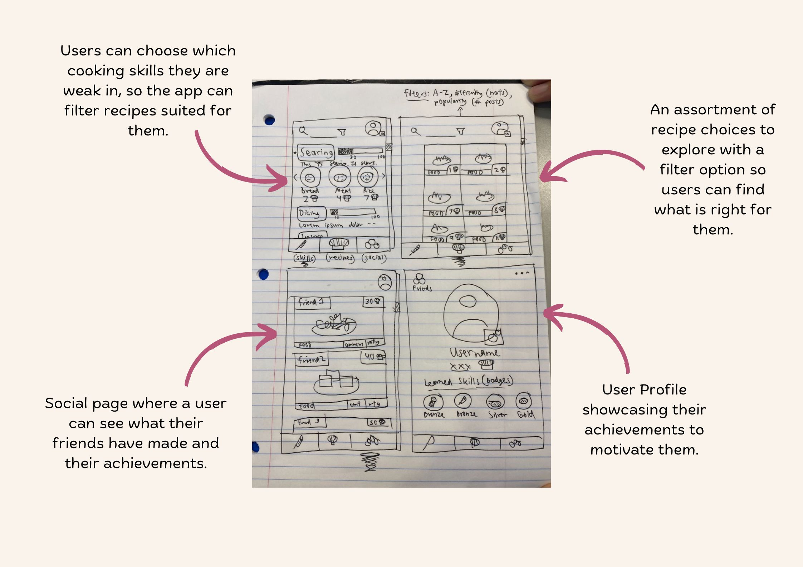
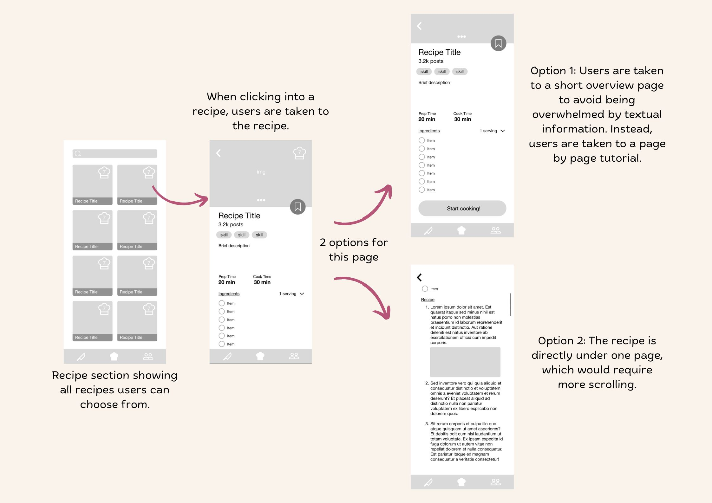

ROLE
Team Leader
TIMELINE
10 Weeks
Jan '24 - Mar '24
TEAM
6 Team Members
SKILLS
User Research
Figma Prototyping
Visual Design
Team Leader
10 Weeks
Jan '24 - Mar '24
6 Team Members
User Research
Figma Prototyping
Visual Design
Transitioning into college, students often lack the knowledge for learning how to cook. It takes time and practice and is a complex new world for beginners. Eating out can be out of the budget for many students, and dining hall food doesn’t always assess student health needs. Finding the motivation to cook or learn to cook can be difficult for busy students.
“I don’t cook because I never had the chance to learn from anyone and it is not easily accessible to me” - Interviewee A
“I enjoy cooking a lot for others and sharing meals with other people, but I don’t cook as often if it is just for myself.” - Interviewee B
“I’ve never really needed to cook until college. Now I’m trying to catch up in terms of cooking skills” - Interviewee C
We aim to empower individuals to discover the joy of cooking by providing accessible, engaging, and personalized culinary education.
Munchie Masters is a social cooking app in which users can level up their cooking skills whilst simultaneously connecting with their friends and fellow food enthusiasts through sharing of recipes, achievements, and reviews.
Choose the skills you would like to work on and watch yourself improve.
Explore different recipes and earn points! The point system can be viewed amongst friends for a friendly challenge to help motivate users socially.
Cooking can be daunting alone. Share your meals with your friends!
Looking into the market, we found similar apps that would help motivate individuals to cook. Keeping these in mind, we hoped to craft an app that tailors to individuals who lack motivation and guidance to cooking.
PEPPER
Pepper is an app curated to allows user to share their meals and provides access to a cookbook of over 1 million recipes.
• Pros: Social engagement, wide range of recipes.
• Cons: Lack of guidance.
ZEST
Zest is an app that teaches users to cook, holding their hand through the process.
• Pros:: Detailed and accessible guidance.
• Cons: Lack of social aspect.
We had 35 participants in our survey, mainly all students around early university ages. Our findings demonstrated:
People enjoy cooking because of the cheaper and healthier options it provides.
People who don’t cook have mainly feel this way because of time constraints, lack of ingredients, no motivation, and feel cooking is expensive and difficult.
In cooking, people mostly struggle with timing, cutting skills/meat, and finding diverse/cultural recipes.
In order to fully grasp how potential users would benefit the most from our application, we created an affinity diagram based off our user surveys.
We began planning our low fidelity prototype by drawing out our ideas on paper. Below showcases the brainstorming illustration that best depicted our designs.
We then created a few low fidelity designs on figma to further organize our ideas. Our recipe section had the most design layers, so we focused on the potential design flows for this section.
Starting with the onboarding stage, we created these pages to welcome the users and present options for users to choose from to curate their experience. Our stylized progress bar keeps the user engaged and lets them know how far along they are in the
Next, the user can explore the main flow. The main menu shows different skills a user has choices to work on. Focusing on searing through this protoype, the user is first taken to more information about searing. Next, the user is able to upload photos of their meals. Lastly, the user is taken to an achievment screen feeling satisfied.
Moving onto the recipes section, users can explore a variety of recipes in an organized fashion. Clicking into Tandoori Chicken, the protoype provides a full overview of the recipe so the user doesn't have to fully commit and can still explore other options. Clicking "Start cooking!" takes the user to the full recipe where they can then upload photos.
Our final part of the protoype was the profile and social section. Here, users can create their own profile to bond with friends and see their achievements.
Additional user testing is needed to gather feedback on usability and functionality, ensuring the site meets the needs of all target audiences before the final launch.
Starting out on this project, I was nervous to be the assigned leader of the team. However, this experience has not only allowed me to improve on my skills technically, but also has allowed me to learn how to take action and listen to my team members. Having a mentor to guide our teams through our projects helped me gain a deeper understanding about how every step matters. Through detailed and meaningful data, we craft new innovative ideas fit for users.